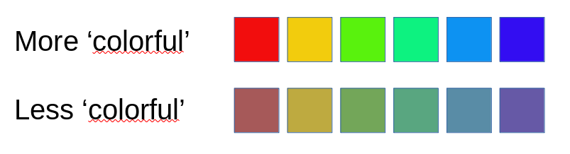
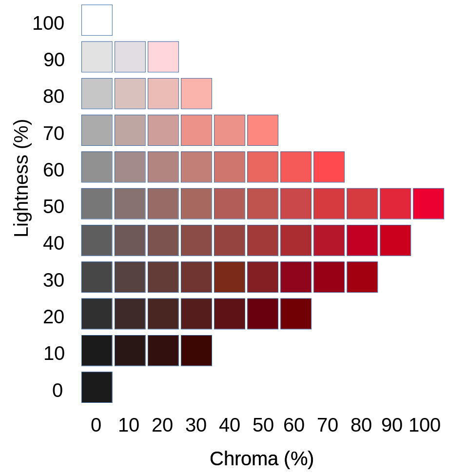
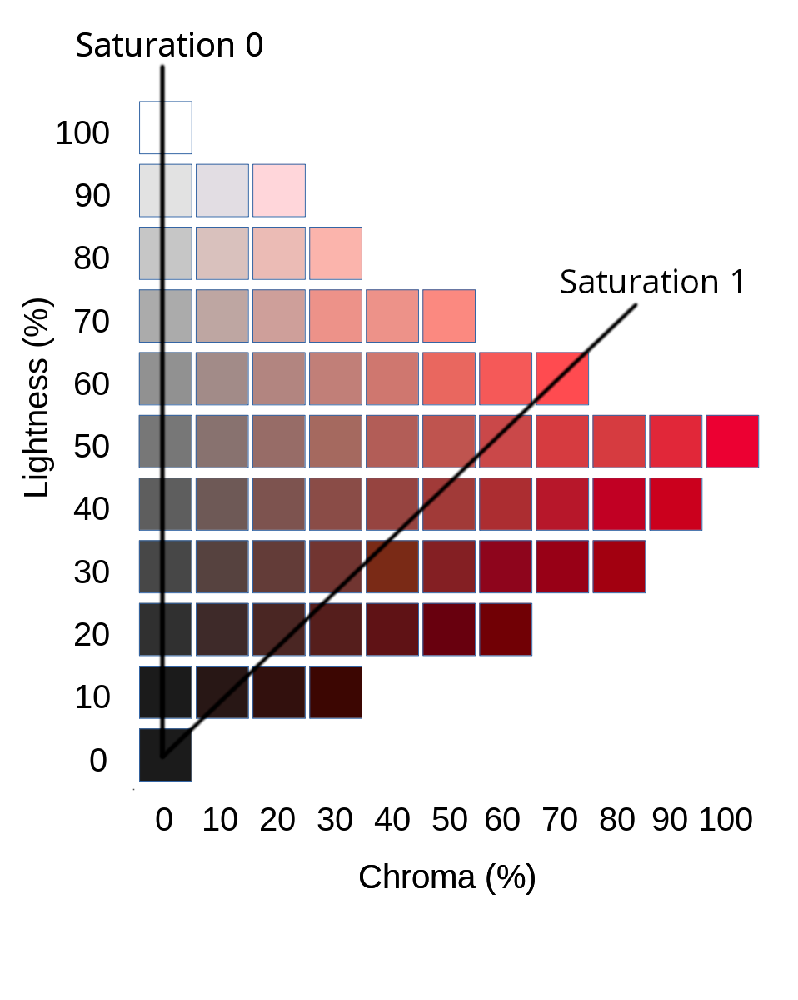
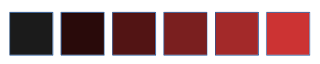
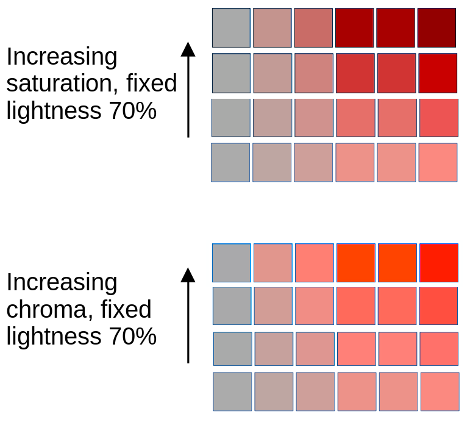

What exactly is 'saturation'?
 'Saturation' expresses the 'colourfulness' of an image, in some
sense. Most image editing applications provide a means to adjust saturation,
as they understand it,
while some provide a way to adjust other measures of colourfulness,
like 'chroma' and 'brilliance'.
'Saturation' expresses the 'colourfulness' of an image, in some
sense. Most image editing applications provide a means to adjust saturation,
as they understand it,
while some provide a way to adjust other measures of colourfulness,
like 'chroma' and 'brilliance'.
Some of these terms have well-defined meanings in the photographic industries, while others do not. 'Saturation' is a term that seems to be particularly vague. The difference between 'saturation' and 'chroma' -- if any -- is a particularly slippery one.
I became interested in this field because I recently switched my photo editing workflow from Adobe Lightroom to Darktable. Unlikely Lightroom, Darktable exposes the technicalities of colour management, and users need some knowledge of the subject to get the best results. The Darktable manual does explain the terms the software uses, but the explanation assumes a fair bit of background knowledge.
In this article I try to explain the basic terminology associated with colour -- specifically as it applies to Darktable, but also in a way that I hope applies more generally. For better or worse, I won't be using any math more complicated that basic arithmetic. My hope is that this elementary article will help readers to understand some of the more mathematical treatments of this subject.
Note:
I confess that, for reasons of brevity, I'm glossing over some subtleties about what 'white' means.
The problem of colour
Note:
The images on this page show some rather subtle variations in colour. They all use the sRGB colour space, so they should display reasonably correctly on most PC-type systems with LCD monitors. I hope that the message will be clear, at least, even on systems with badly-calibrated monitors, but some subtleties may be lost.
Take a look at the picture below. The colour patches in the top row are all of different hues (red, yellow, etc), but are (broadly speaking) judged to be 'equally colourful'. They are all equally 'bright' as well, at a perceptual level. That is, if asked to judge whether the red patch in the top row is brighter or darker than the yellow patch, people are unable to judge -- or are as likely to judge one way as the other.

The patches in the bottom row are, in some sense 'less colourful' than those in the top row. They are, however, all as colourful as one another, judged subjectively. While it isn't particular easy to define 'colorfulness', we recognize it intuitively, and most people would concede that the top row is more 'colourful' than the bottom.
What about 'lightness' or 'brightness'? Are the patches in the bottom row lighter or darker than those in the top row? There is at least one objective sense in which the bottom row patches are lighter -- if we sum the values of the red, green, and blue components of the colours in the bottom row, the sums are all higher than those in the top row.
And yet there is some sense in which the top row is brighter than the bottom row, although it's hard to articulate. The colors in the top row are, perhaps, 'stronger' or 'more vivid' or some such. We might also say that the top row colours are 'more saturated', and so they are -- but this doesn't get us any closer to a clear notion of saturation. Moreover, the relationship between 'saturation' and 'brightness' is not particularly clear. Since the bottom row patches are brighter on at least one objective measure than the top row, it isn't the case that 'brightness' -- however we define it -- necessarily increases with saturation.
The Munsell colour system
Over a hundred years ago, painter and academic Albert Munsell developed one of the earliest rigorous attempts to define colour. His system is still widely used. He originally distributed the colours around a sphere, but it soon became apparent that colour perception simply isn't regular enough to be mapped to a sphere. Later versions of the Munsell colour system use a kind of dual cone; that is, the colour space is the shape of a spinning top, or one cone inverted on top of another. Or, perhaps, a flying saucer. I refer to the 'Munsell cone' although, strictly speaking, it's a somewhat irregular dual cone.
There's a good realization of the Munsell colour cone here. Munsell realized that we need at least three pieces of information to describe a colour. Munsell's system is based on hue, lightness, and chroma. It's important to understand that all of Munsell's colour coordinates are perceptual -- that is, he derived them by asking large numbers of people to compare samples of pigment for lightness and colour. Of course, there are ways to map these perceptual measures onto physical ones mathematically -- displaying them on a web page would be somewhat difficult if there were not.
Munsell's system was formalized by the Commission Internationale de l'Eclairage (CIE) into (essentially) the L*C*h colour system, and I will be referring to CIE definitions of colour measurements in this article.
Hue
Munell's cone is divided into wedges based on hue. On the whole, we don't have a problem with the notion of hue. Hue is a measure of the wavelength of light, although the human eye cannot distinguish wavelengths very well. That's why we perceive the colours of a rainbow to be distinct -- red, orange, etc -- when they actually form a continuous spectrum.
So Munsell's circle of hues is, like everything thing else in his system, perceptual -- the idea of a colour circle goes back to a time long before we understood how light interacts with our retinas. Isaac Newton represented hue on a circle and also, incidentally, used the term 'saturation', which he understood to mean 'distance from whiteness'. We intuitively understand that red and green are 'complementary' in some way, and we understood this long before we knew that there are cone cells in the retina specifically adapted to discriminate red from green light. There's nothing particularly 'circular' about the spectral properties of lights -- the colour circle is just an abstraction of human light processing. At any rate, I won't have any more to say about hue in this article.
Chroma and lightness
If we take a cross-section through the Munsell cone at the level of a particular hue -- a particular wedge, if you like -- then we get something like the diagram below, which is specific for the red hue.

On the left-hand edge of this diagram is the grey line; that is, the line of zero colourfulness which runs through the very centre of the cone. This line is the axis of lightness -- it runs from zero lightness at the bottom to full (1.0) lightness at the top. The CIE defines lightness as the
brightness of an area judged relative to the brightness of a similarly illuminated area that appears to be white or highly transmitting.That is, if 'white' is taken to represent full or maximal illumination, lightness is some proportion of that white value. You'll notice, perhaps, that the individual lightness patches on the grey light appear to show uniform steps of brightness. This, again, is a perceptual matter -- it's unlikely that there is a linear increase in the amount of light emitted from the monitor screen from the black patch to the white patch.
For a specific lightness, the patches from left to right (in my diagram) represent increasing chroma. Of course, in the real Munsell cone increasing chroma reads from the grey line outwards, in whatever direction represents a particular hue. Chroma is a measure of colorfulness, but not one that is intuitively obvious. The CIE defines chroma as the
colourfulness of an area judged as a proportion of the brightness of a similarly illuminated area that appears white or highly transmitting.
The significant point here is that each patch in a specific line has the same lightness -- as perceived -- as the patch on the grey line to its left. As we move from left to right along a specific lightness line, the patches do not get any lighter (in the CIE sense), but they do get more colourful.
Notice that full chroma is only achieved at 50% lightness. It's worth asking why we can't add patches to the right on, say, the 60% lightness row that are 'more red' than the existing patches. Well, we can, in a sense -- but we can't make them more red without making them lighter, or changing their hue.
A technological way of saying this is that, at the right-hand end of each lightness row, that patch at that point has the red channel turned fully on. We can't get more light from a display device than 'fully on'. We can add more green and blue light but this will not only make the patch lighter, it will make it less red, because it will be more blue or green. In a more mathematical treatment of this subject, we would find that the calculated red, green, or blue values would turn out to be negative.
At 100% lightness, and at 0% lightness, there is no chroma at all. In technological terms we can say that the 100% point -- white -- has all the red, green, and blue channels turned fully on, while the 0% point -- black -- has them all turned fully off. In both cases, there is clearly no difference between any of the colour channels, so there can be no colourfulness.
Saturation
So we come, at least, to saturation.
There is no specific measure of saturation in Munsell's colour cone, nor in the CIE L*C*h colour system. CIE defines saturation as the
colourfulness of an area judged in proportion to its brightness.We might, perhaps, express it as 'colourfulness divided by brightness', although we have to be a bit careful about what happens when the brightness is zero.
In the Munsell system, colourfulness is chroma, and brightness is lightness; so we can describe saturation as 'chroma divided by lightness' -- again being a bit careful to avoid the division by zero. This means that, in the Munsell system, lines of constant saturation can be visualized as straight lines radiating out from the zero point, as shown in the picture below.

Clearly, the line of zero saturation must lie along the grey line, where there is no colour at all. The line of saturation=1.0 is not particular distinctive in my example. A real colour space that defined saturation would probably want '100% saturation' to include the point of maximum chroma; but this is just a matter of scaling. Notice that, at the zero point, 'chroma divided by lightness' is not defined, which is why that particular point appears in all the lines of constant saturation.
If we take a particular line of constant saturation, starting from the zero point and moving outwards in the direction of increasing chroma, we might end up with the example below.

All these patches of a equal saturation, although this is not immediately apparent. In particular, it's not clear why the black, and nearly black, patches have the same saturation as the scarlet red patch. And yet, they do; this is because the CIE definition of 'saturation' is based on colourfulness compared with lightness. If a colour is nearly black, it doesn't have to have an awful lot of red in it to be a saturated red, because there isn't a lot of lightness to compare that red against.
Lightness does increase as we move from the zero point outwards along a line of constant saturation. In the example above, the right-hand patches are clearly lighter than the left-hand patches. But lightness does not increase proportionately; that is, doubling the distance moved along the saturation line does not double the lightness.
Brilliance
So what, if anything, is it that does vary proportionally as we move outwards along the saturation line? Darktable calls this quantity brilliance. So far as I know, brilliance has no CIE definition, and I don't think it's used in a consistent way. Moreover, -- again so far as I know -- Darktable is the only image editing application that provides a specific 'brilliance' adjustment, distinct from brightness and saturation. The right-hand patches in the figure about are more saturated, and more brilliant, than the left-hand patches.
Saturation compared with chroma
It's interesting to look at the practical differences between saturation and chroma, rather than the purely theoretical. The picture below shows two sets of patches. The bottom rows of each set are the same. Moving upwards from the bottom row in the top set of patches we are increasing saturation. In the bottom set, moving upwards is an increase in chroma.

Clearly the left-hand patch does not change from row to row, because it's grey, and has no colour component. All the other patches, however, do change -- although it is not all that easy to articulate what the change is. Moving from bottom to top, both sets of patches show an increase in 'colourfulness', broadly understood. However, increasing saturation tends to darken the colour, while increasing chroma (by definition) does not change the lightness.
Vibrance
Vibrance is something that I only mention in passing, as it is an adjustment offered by many image editors. So far as I can tell, a vibrance adjustment is the same as a saturation adjustment, except that the adjustment is scaled inversely by the initial saturation. That is, to increase vibrance is to increase saturation, but to increase it more for less saturated parts of the image.
Colour adjustments in Darktable
With these explanations in mind, we can examine what the various colour adjustments do in Darktable. I've noticed that, in some places, the Darktable user interface uses the term 'saturation' where 'chroma' would be more correct. The documentation admits this, stating that it is to make the software more accessible -- presumably by misusing the term 'saturation' in the same way that other software does.
Brightness: adjusts the lightness of the image in a way that keeps the perceived chroma the same. The saturation of the image will thus tend to decrease as brightness increases. Increasing brightness can be seen as moving pixel values vertically up the Munsell cone.
Brilliance: adjusts each pixel's composition in such a way as to move it along the line of constant saturation it occupies. That is, it increases both the colourfulness and the lightness of the image, whilst keeping saturation the same.
Chroma: adjusts the colourfulness while keeping the lightness the same. This can be seen as stretching or shrinking the Munsell cone horizontally. Saturation will increase as chroma increases, but not uniformly -- lighter parts of the image will have a greater increase in saturation.
Saturation: adjusts each pixel's composition such that its line of constant saturation in the Munsell diagram is increased in slope (that is, it becomes more vertical). So decreasing saturation is like squeezing the Munsell cone into a more pointy cone, while increasing it is like opening the cone out and making it flatter.
Closing remarks
Although there is precise definition of 'saturation', at last according to the CIE, the term is widely abused. Saturation and chroma are both measures of 'colorfulness' but, as we've seen, the practical differences between them are subtle.